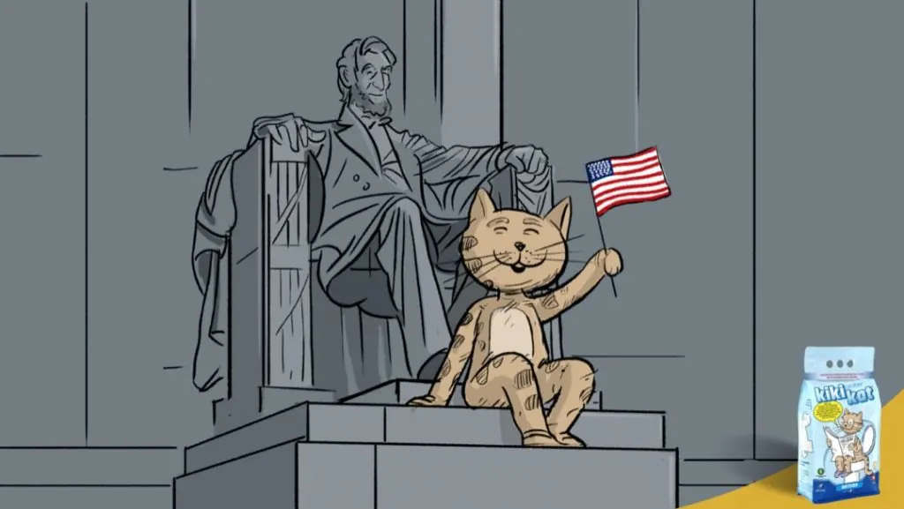
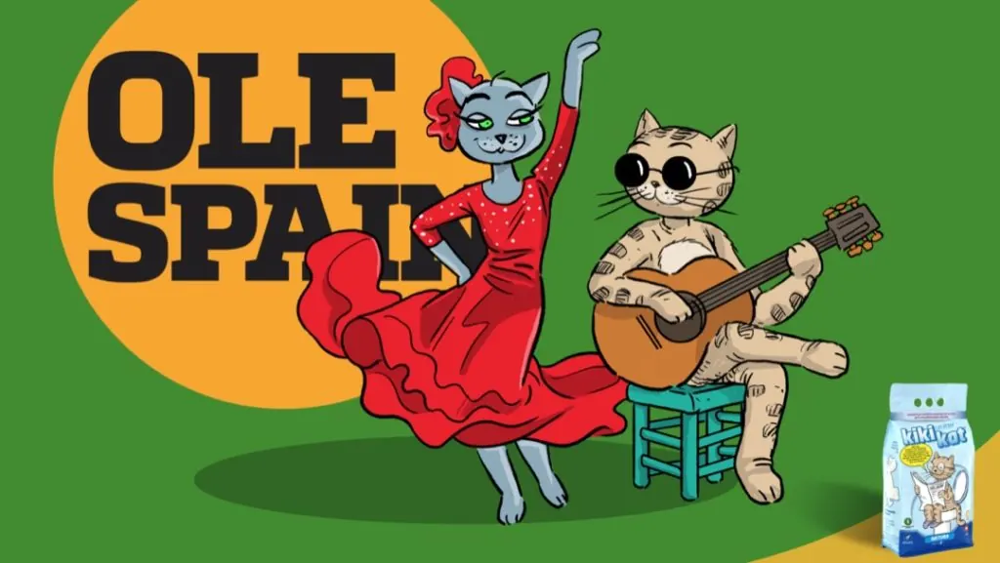
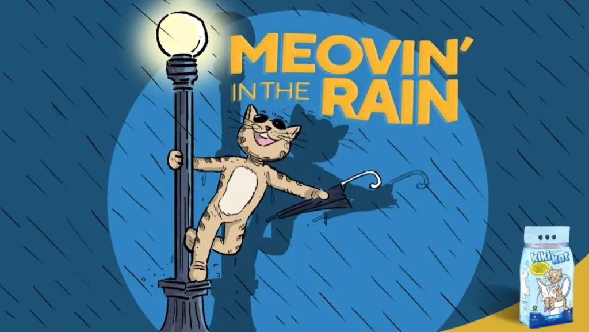
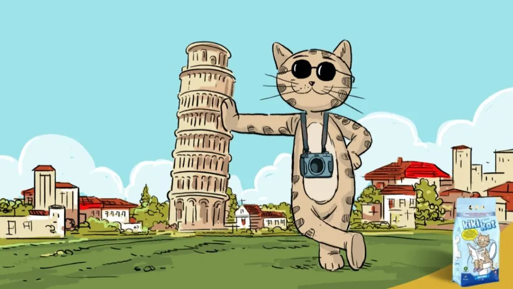
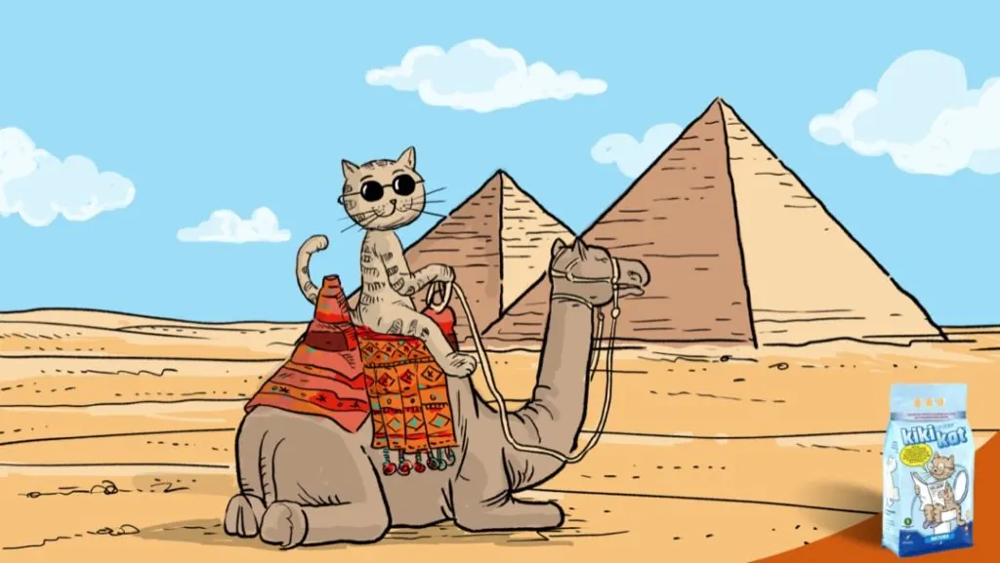

Úvod › Galerie
Dobrodružství Kiki Kat
Kocour z obalu Kiki Kat rád cestuje. QR kód na zadní straně balení vede na jeho další dobrodružství.





Sledujte Kiki Kat
Videa a novinky výrobce (anglicky):